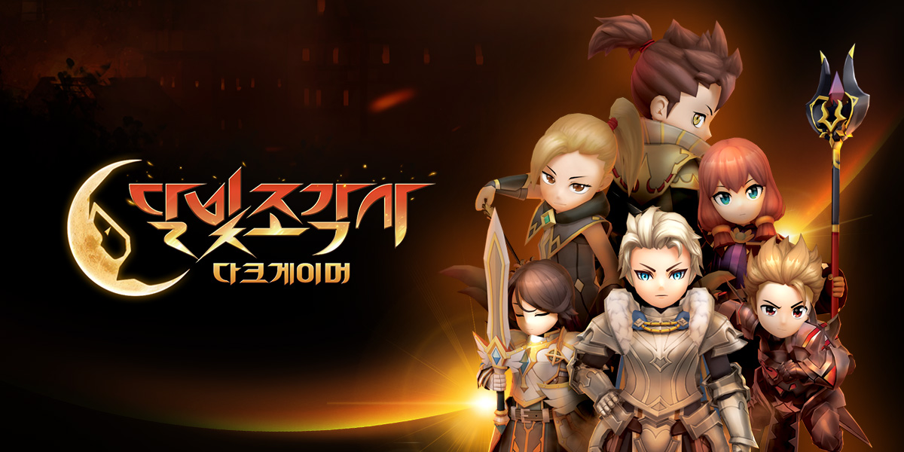

시스템·라이브 개선
- 일차별 미션이 열리는 이벤트 시스템
- 지표 데이터와 유저 피드백 기반 불편 요소 발굴
- 장비 개조 등 기존 시스템 개편안 수립
02 · LIVE MMORPG
라이브 지표와 유저 피드백을 바탕으로 시스템의 불편 요소를 찾고, 일상 플레이와 연결되는 이벤트와 협동 콘텐츠를 기획했습니다.

일반 플레이에서 미션을 달성하고 보상을 받도록 이벤트를 기존 콘텐츠와 연결했습니다.

기존 보스 리소스를 활용해 웨이브마다 다른 패턴 조합을 경험하는 레이드를 설계했습니다. 성장 단계가 다른 유저가 역할을 나누고 서로의 약점을 보완하도록 하는 것이 목표였습니다.